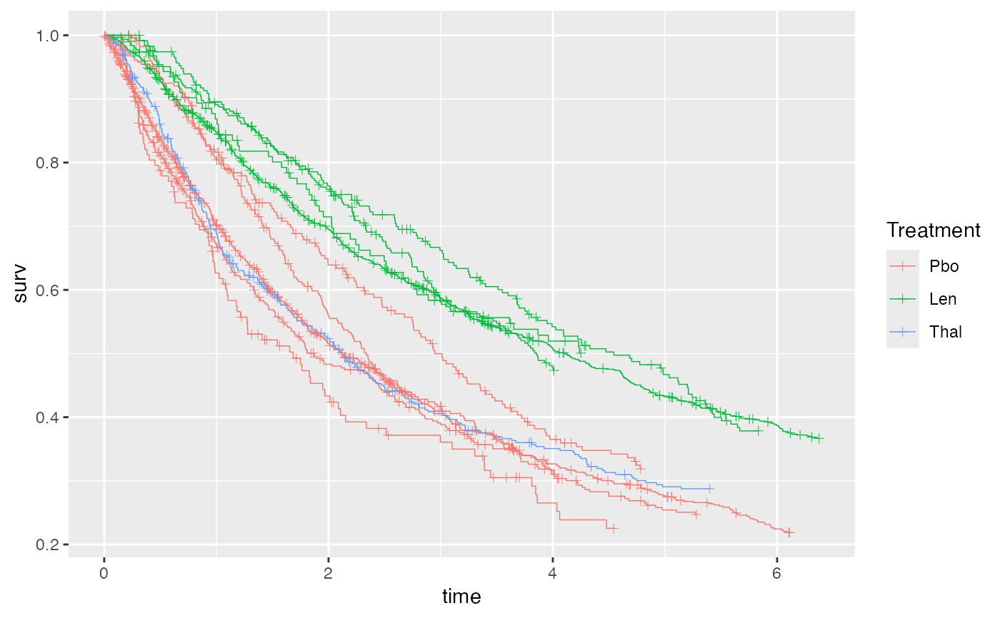
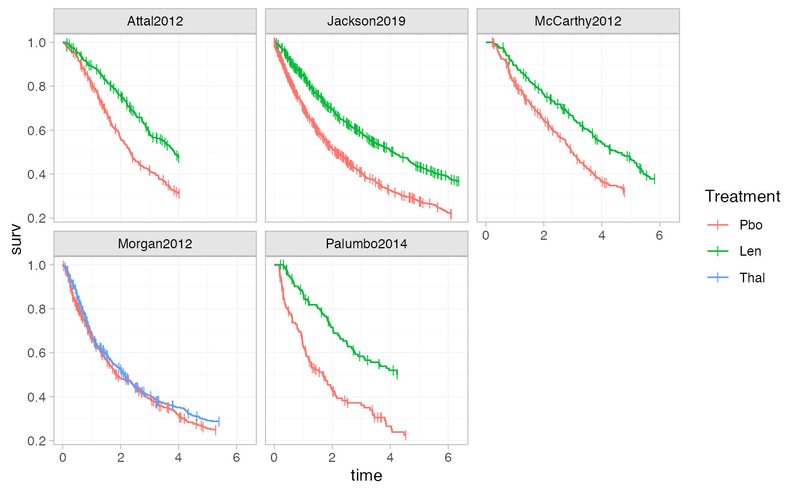
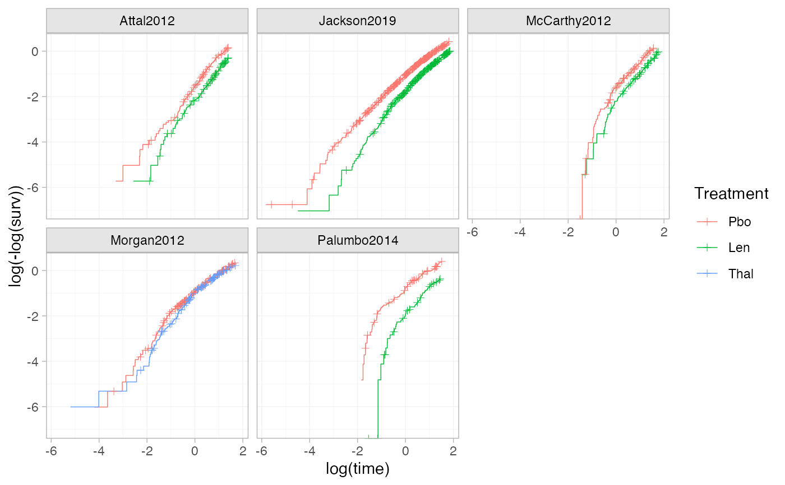
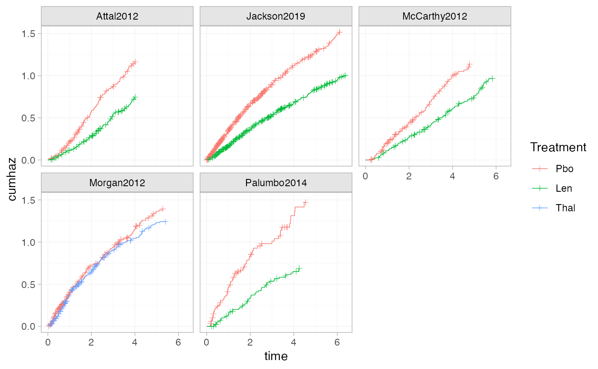
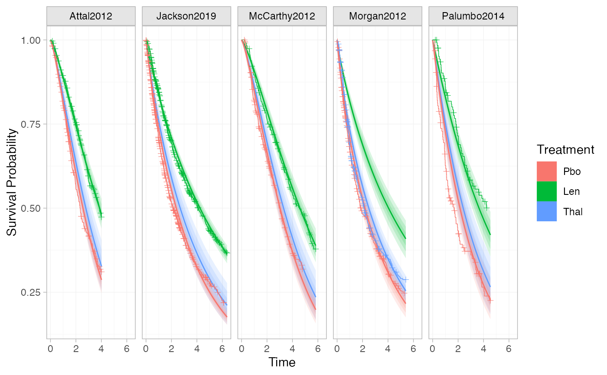

This helper function constructs a ggplot2 geom to plot Kaplan-Meier curves
from a network containing survival or time-to-event outcomes. This is useful
for overlaying the "raw" survival data on the estimated survival functions
created with plotted with plot.surv_nma_summary(), but can also be used
standalone to plot Kaplan-Meier curves before fitting a model.
Arguments
- network
A
nma_datanetwork object containing survival outcomes- ...
Additional arguments passed to
survival::survfit()- transform
Character string giving the transformation to apply to the KM curves before plotting. The default is
"identity"for no transformation; other options are"cloglog"for \(\log(-\log(S))\),"log"for \(\log(S)\), or"cumhaz"for the cumulative hazard \(-\log(S)\).- curve_args
Optional list of arguments to customise the curves plotted with
ggplot2::geom_step()- cens_args
Optional list of arguments to customise the censoring marks plotted with
ggplot2::geom_point()
Examples
# Set up newly-diagnosed multiple myeloma network
head(ndmm_ipd)
#> study trt studyf trtf age iss_stage3 response_cr_vgpr male
#> 1 McCarthy2012 Pbo McCarthy2012 Pbo 50.81625 0 1 0
#> 2 McCarthy2012 Pbo McCarthy2012 Pbo 62.18165 0 0 0
#> 3 McCarthy2012 Pbo McCarthy2012 Pbo 51.53762 1 1 1
#> 4 McCarthy2012 Pbo McCarthy2012 Pbo 46.74128 0 1 1
#> 5 McCarthy2012 Pbo McCarthy2012 Pbo 62.62561 0 1 1
#> 6 McCarthy2012 Pbo McCarthy2012 Pbo 49.24520 1 1 0
#> eventtime status
#> 1 31.106516 1
#> 2 3.299623 0
#> 3 57.400000 0
#> 4 57.400000 0
#> 5 57.400000 0
#> 6 30.714460 0
head(ndmm_agd)
#> study studyf trt trtf eventtime status
#> 1 Morgan2012 Morgan2012 Pbo Pbo 18.72575 1
#> 2 Morgan2012 Morgan2012 Pbo Pbo 63.36000 0
#> 3 Morgan2012 Morgan2012 Pbo Pbo 34.35726 1
#> 4 Morgan2012 Morgan2012 Pbo Pbo 10.77826 1
#> 5 Morgan2012 Morgan2012 Pbo Pbo 63.36000 0
#> 6 Morgan2012 Morgan2012 Pbo Pbo 14.52966 1
ndmm_net <- combine_network(
set_ipd(ndmm_ipd,
study, trt,
Surv = Surv(eventtime / 12, status)),
set_agd_surv(ndmm_agd,
study, trt,
Surv = Surv(eventtime / 12, status),
covariates = ndmm_agd_covs))
# Plot KM curves using ggplot2
library(ggplot2)
# We need to create an empty ggplot object to add the curves to
ggplot() + geom_km(ndmm_net)

# Adding plotting options, facets, axis labels, and a plot theme
ggplot() +
geom_km(ndmm_net,
curve_args = list(linewidth = 0.5),
cens_args = list(size = 3, shape = 124)) +
facet_wrap(vars(Study)) +
labs(xlab = "Time", ylab = "Survival Probability") +
theme_multinma()

# Using the transform argument to produce log-log plots (e.g. to assess the
# proportional hazards assumption)
ggplot() +
geom_km(ndmm_net, transform = "cloglog") +
facet_wrap(vars(Study)) +
theme_multinma()

# Using the transform argument to produce cumulative hazard plots
ggplot() +
geom_km(ndmm_net, transform = "cumhaz") +
facet_wrap(vars(Study)) +
theme_multinma()

# This function can also be used to add KM data to plots of estimated survival
# curves from a fitted model, in a similar manner
# \donttest{
# Run newly-diagnosed multiple myeloma example if not already available
if (!exists("ndmm_fit")) example("example_ndmm", run.donttest = TRUE)
#>
#> exmpl_> # Set up newly-diagnosed multiple myeloma network
#> exmpl_>
#> exmpl_> head(ndmm_ipd)
#> study trt studyf trtf age iss_stage3 response_cr_vgpr male
#> 1 McCarthy2012 Pbo McCarthy2012 Pbo 50.81625 0 1 0
#> 2 McCarthy2012 Pbo McCarthy2012 Pbo 62.18165 0 0 0
#> 3 McCarthy2012 Pbo McCarthy2012 Pbo 51.53762 1 1 1
#> 4 McCarthy2012 Pbo McCarthy2012 Pbo 46.74128 0 1 1
#> 5 McCarthy2012 Pbo McCarthy2012 Pbo 62.62561 0 1 1
#> 6 McCarthy2012 Pbo McCarthy2012 Pbo 49.24520 1 1 0
#> eventtime status
#> 1 31.106516 1
#> 2 3.299623 0
#> 3 57.400000 0
#> 4 57.400000 0
#> 5 57.400000 0
#> 6 30.714460 0
#>
#> exmpl_> head(ndmm_agd)
#> study studyf trt trtf eventtime status
#> 1 Morgan2012 Morgan2012 Pbo Pbo 18.72575 1
#> 2 Morgan2012 Morgan2012 Pbo Pbo 63.36000 0
#> 3 Morgan2012 Morgan2012 Pbo Pbo 34.35726 1
#> 4 Morgan2012 Morgan2012 Pbo Pbo 10.77826 1
#> 5 Morgan2012 Morgan2012 Pbo Pbo 63.36000 0
#> 6 Morgan2012 Morgan2012 Pbo Pbo 14.52966 1
#>
#> exmpl_> ndmm_net <- combine_network(
#> exmpl_+ set_ipd(ndmm_ipd,
#> exmpl_+ study, trt,
#> exmpl_+ Surv = Surv(eventtime / 12, status)),
#> exmpl_+ set_agd_surv(ndmm_agd,
#> exmpl_+ study, trt,
#> exmpl_+ Surv = Surv(eventtime / 12, status),
#> exmpl_+ covariates = ndmm_agd_covs))
#>
#> exmpl_> ## No test:
#> exmpl_> # Fit Weibull (PH) model
#> exmpl_> ndmm_fit <- nma(ndmm_net, ## Don't show:
#> exmpl_+ refresh = if (interactive()) 200 else 0,
#> exmpl_+ ## End(Don't show)
#> exmpl_+ likelihood = "weibull",
#> exmpl_+ prior_intercept = normal(scale = 100),
#> exmpl_+ prior_trt = normal(scale = 10),
#> exmpl_+ prior_aux = half_normal(scale = 10))
#> Note: Setting "Pbo" as the network reference treatment.
#>
#> exmpl_> ndmm_fit
#> A fixed effects NMA with a weibull likelihood (log link).
#> Inference for Stan model: survival_param.
#> 4 chains, each with iter=2000; warmup=1000; thin=1;
#> post-warmup draws per chain=1000, total post-warmup draws=4000.
#>
#> mean se_mean sd 2.5% 25% 50% 75%
#> d[Len] -0.54 0.00 0.05 -0.63 -0.57 -0.54 -0.51
#> d[Thal] -0.11 0.00 0.09 -0.29 -0.17 -0.11 -0.05
#> lp__ -6229.99 0.06 2.49 -6235.81 -6231.42 -6229.61 -6228.18
#> shape[Attal2012] 1.30 0.00 0.06 1.18 1.25 1.30 1.34
#> shape[Jackson2019] 0.93 0.00 0.02 0.89 0.92 0.93 0.95
#> shape[McCarthy2012] 1.30 0.00 0.07 1.17 1.25 1.29 1.34
#> shape[Morgan2012] 0.88 0.00 0.03 0.82 0.86 0.88 0.90
#> shape[Palumbo2014] 1.02 0.00 0.07 0.88 0.97 1.02 1.06
#> 97.5% n_eff Rhat
#> d[Len] -0.45 5031 1
#> d[Thal] 0.06 4915 1
#> lp__ -6226.16 1548 1
#> shape[Attal2012] 1.42 4275 1
#> shape[Jackson2019] 0.98 4679 1
#> shape[McCarthy2012] 1.43 4275 1
#> shape[Morgan2012] 0.94 5574 1
#> shape[Palumbo2014] 1.16 4304 1
#>
#> Samples were drawn using NUTS(diag_e) at Tue May 27 13:17:32 2025.
#> For each parameter, n_eff is a crude measure of effective sample size,
#> and Rhat is the potential scale reduction factor on split chains (at
#> convergence, Rhat=1).
#>
#> exmpl_> ## End(No test)
#> exmpl_> ## Don't show:
#> exmpl_> if (requireNamespace("pkgdown", quietly = TRUE) && pkgdown::in_pkgdown()) {
#> exmpl_+ assign("ndmm_net", ndmm_net, .GlobalEnv)
#> exmpl_+ assign("ndmm_fit", ndmm_fit, .GlobalEnv)
#> exmpl_+ }
#>
#> exmpl_> ## End(Don't show)
#> exmpl_>
#> exmpl_>
#> exmpl_>
# }
# Plot estimated survival curves, and overlay the KM data
# \donttest{
plot(predict(ndmm_fit, type = "survival")) + geom_km(ndmm_net)

# }